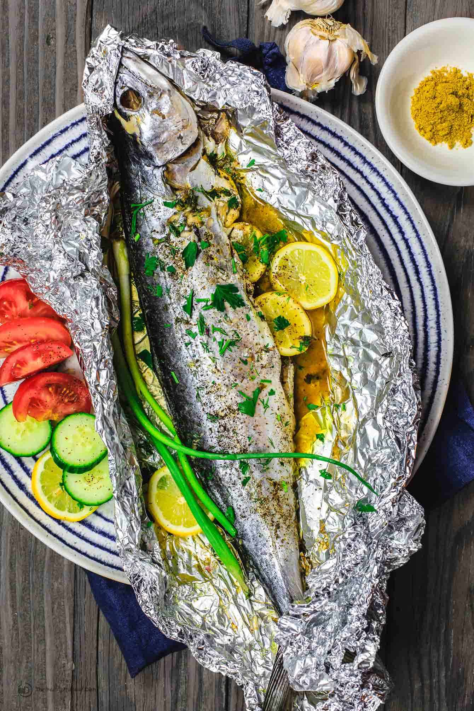

Description
Easy all-star whole roasted Spanish Mackerel Recipe.
Prepared Mediterranean-style with a stuffing of garlic,
fresh herbs and lemons. Roasted in foil!
Ingredients
- 3 large garlic cloves
- 1 tsp salt, more for later
- 1 tsp ground coriander
- ½ tsp ground cumin
- ¼ cup finely chopped fresh parsley
- ¼ cup finely chopped fresh dill
- 1 ½ lb whole Spanish Mackerel, cleaned and gutted (but with head)
- 1 lemon, thinly sliced
- Early Harvest extra virgin olive oil
Steps:
- Preheat the oven to 350 degrees F and set a roasting sheet pan inside to warm.
- Using a mortar and pestle, crush garlic with salt until smooth. Add coriander and cumin and continue crushing. Mix in parsley and dill.
- Pat the fish dry, inside and out. Remove the dark vein that runs along the back of the cavity, if it's still there. And if needed, run your knife along the cavity to open it up some more. Salt generously inside and on both sides outside, then place on a lightly oiled piece of foil that is large enough to enclose the fish.
- Stuff the fish cavity with lemon slices and the garlic and herb mixture you just prepared. Drizzle generously with olive oil.
- Fold the foil over the fish lengthwise, tightly closing the top seam to trap the steam. Place the foiled fish on top of the hot sheet pan and bake in the 350 degrees F heated-oven for 30-40 minutes, depending on the thickness of the fish.
- Remove and Serve